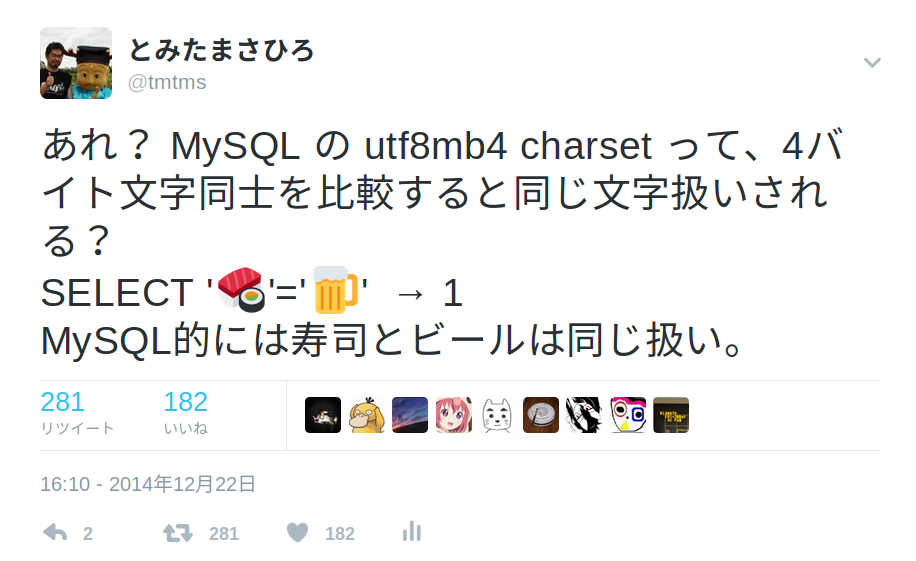

MySQL Casual こわい


MySQL Casual Vol.10
2017/02/01
とみたまさひろ
X Protocol とか
文字集合の文字をコンピュータで利用できるバイト列に変換する方式
| Encoding | 文字集合 | 用途 |
|---|---|---|
| ISO-2022-JP | US-ASCII, JIS X 0201(ラテン文字), JIS X 0208 | メール |
| EUC-JP | US-ASCII, JIS X 0201(カナ文字), JIS X 0208, JIS X 0212 |
昔のUNIX |
| SHIFT_JIS | JIS X 0201, JIS X 0208 | |
| Windows-31J CP932 |
Windows-31J | Windows |
| Encoding | 文字集合 | 1文字のサイズ |
|---|---|---|
| UTF-8 | Unicode | 1〜4バイト |
| UTF-16 | Unicode | 2バイト |
| UTF-32 | Unicode | 4バイト |
mysql> SHOW CHARACTER SET;
+----------+---------------------------------+---------------------+--------+
| Charset | Description | Default collation | Maxlen |
+----------+---------------------------------+---------------------+--------+
| big5 | Big5 Traditional Chinese | big5_chinese_ci | 2 |
| dec8 | DEC West European | dec8_swedish_ci | 1 |
| cp850 | DOS West European | cp850_general_ci | 1 |
| hp8 | HP West European | hp8_english_ci | 1 |
| koi8r | KOI8-R Relcom Russian | koi8r_general_ci | 1 |
| latin1 | cp1252 West European | latin1_swedish_ci | 1 |
| latin2 | ISO 8859-2 Central European | latin2_general_ci | 1 |
| swe7 | 7bit Swedish | swe7_swedish_ci | 1 |
| ascii | US ASCII | ascii_general_ci | 1 |
| ujis | EUC-JP Japanese | ujis_japanese_ci | 3 |
| sjis | Shift-JIS Japanese | sjis_japanese_ci | 2 |
| hebrew | ISO 8859-8 Hebrew | hebrew_general_ci | 1 |
| tis620 | TIS620 Thai | tis620_thai_ci | 1 |
| euckr | EUC-KR Korean | euckr_korean_ci | 2 |
| charset | 文字集合 | エンコーディング |
|---|---|---|
| ujis | JIS X 0201 + 0208 | EUC-JP |
| sjis | JIS X 0201 + 0208 | SHIFT_JIS |
| eucjpms | Windows-31J | EUC-JP風 |
| cp932 | Windows-31J | Windows-31J |
| utf8 | Unicode | UTF-8 |
| utf8mb4 | Unicode | UTF-8 |
…を全部別々に設定できる（嫌な予感しかしない）
--character-set-server=utf8mb4
[mysqld] セクションcharacter-set-server = utf8mb4
character_set_server
配下に作成するテーブルのCharsetのデフォルト値
サーバーCharsetと同じであれば指定しなくてもいい
作成: CREATE DATABASE db CHARSET utf8mb4;
確認: SHOW CREATE DATABASE db;
変更: ALTER DATABASE db CHARSET utf8mb4;
変更しても既存のテーブルCharsetは変更されない
データベースCharsetと同じであれば指定する必要はない
作成: CREATE TABLE tbl (...) CHARSET utf8mb4;
SHOW CREATE TABLE tbl;
テーブル属性だけ変更:
ALTER TABLE tbl CHARSET utf8mb4;
全カラムとデータの変換:
ALTER TABLE tbl CONVERT TO CHARSET utf8mb4;
テーブルCharsetと同じであれば指定する必要はない
作成: CREATE TABLE tbl (col VARCHAR(10) CHARSET utf8mb4, ...);
確認: SHOW CREATE TABLE tbl;
変更: ALTER TABLE tbl MODIFY col VARCHAR(10) CHARSET utf8mb4;
変更するとカラム内のデータも変換される
クライアント内での文字列処理と
サーバーとの接続Charsetに使用される
指定方法はプログラム/言語に依存
mysql --default-character-set=utf8mb4
プログラムによっては my.cnf の [client] セクションが有効
[client]
loose-default-character-set = utf8mb4
「loose-」をつけておくとそのパラメータを知らないプログラムは無視してくれる
mysqld との接続毎に異なる
mysql コマンドでOKでも他のアプリからはNGかもしれない
何も指定しなければ latin1
mysql> SHOW VARIABLES LIKE '%char%';
+--------------------------+----------------------------+
| Variable_name | Value |
+--------------------------+----------------------------+
| character_set_client | utf8mb4 |
| character_set_connection | utf8mb4 |
| character_set_database | utf8mb4 |
| character_set_filesystem | binary |
| character_set_results | utf8mb4 |
| character_set_server | utf8mb4 |
| character_set_system | utf8 |
| character_sets_dir | /usr/share/mysql/charsets/ |
+--------------------------+----------------------------+
mysql コマンドのデフォルトCharsetは auto
システムロケール(LC_ALL, LC_CTYPE, LANG 環境変数等)により値が決定
LANG=ja_JP.UTF-8 の場合は utf8 になる
utf8mb4 ではない
LANG=C の場合は latin1 になる
クライアントが扱えない文字は「?」になる
mysql> SELECT str FROM tbl;
+-------+
| str |
+-------+
| ?と? | ← '🍣と🍺'
| ?と? | ← '?と?'
+-------+
mysql> SELECT HEX(str) FROM tbl;
+------------------------+
| HEX(str) |
+------------------------+
| F09F8DA3E381A8F09F8DBA | ← '🍣と🍺'
| 3FE381A83F | ← '?と?'
+------------------------+
文字化けして登録されちゃう
mysql> INSERT INTO tbl (str) VALUES ('🍣と🍺');
Query OK, 1 row affected, 2 warnings (0.05 sec)
mysql> SELECT str,HEX(str) FROM tbl;
+-------------+------------------------+
| str | HEX(str) |
+-------------+------------------------+
| ????と???? | 3F3F3F3FE381A83F3F3F3F |
+-------------+------------------------+
MySQLはおかしなことしてもあまりエラーにならない(余計なお世話)
sql_mode でちゃんとエラーにしてくれる
mysql> SET sql_mode='STRICT_ALL_TABLES';
mysql> INSERT INTO tbl (str) VALUES ('🍣と🍺');
ERROR 1366 (HY000): Incorrect string value:
'\xF0\x9F\x8D\xA3\xE3\x81...' for column 'str' at row 1
MySQL 5.7 からはデフォルト
mysql> SELECT @@sql_mode
ONLY_FULL_GROUP_BY,STRICT_TRANS_TABLES,NO_ZERO_IN_DATE,
NO_ZERO_DATE,ERROR_FOR_DIVISION_BY_ZERO,NO_AUTO_CREATE_USER,
NO_ENGINE_SUBSTITUTION

mysql> SELECT '🐰'='🐢';
+---------+
| '?'='?' |
+---------+
| 1 |
+---------+
mysql> SELECT '🍛'='💩';
+---------+
| '?'='?' |
+---------+
| 1 |
+---------+
mysql> SHOW COLLATION LIKE 'utf8mb4%';
+------------------------+---------+-----+---------+----------+---------+
| Collation | Charset | Id | Default | Compiled | Sortlen |
+------------------------+---------+-----+---------+----------+---------+
| utf8mb4_general_ci | utf8mb4 | 45 | Yes | Yes | 1 |
| utf8mb4_bin | utf8mb4 | 46 | | Yes | 1 |
| utf8mb4_unicode_ci | utf8mb4 | 224 | | Yes | 8 |
| utf8mb4_icelandic_ci | utf8mb4 | 225 | | Yes | 8 |
| utf8mb4_latvian_ci | utf8mb4 | 226 | | Yes | 8 |
| utf8mb4_romanian_ci | utf8mb4 | 227 | | Yes | 8 |
| utf8mb4_slovenian_ci | utf8mb4 | 228 | | Yes | 8 |
| utf8mb4_polish_ci | utf8mb4 | 229 | | Yes | 8 |
| utf8mb4_estonian_ci | utf8mb4 | 230 | | Yes | 8 |
| utf8mb4_spanish_ci | utf8mb4 | 231 | | Yes | 8 |
| utf8mb4_swedish_ci | utf8mb4 | 232 | | Yes | 8 |
| utf8mb4_turkish_ci | utf8mb4 | 233 | | Yes | 8 |
| utf8mb4_czech_ci | utf8mb4 | 234 | | Yes | 8 |
「ci」は Case Insensitive(大文字小文字を区別しない)の意味らしい
A=a, Ａ=ａ)A≠Ａ)A≠a, 🍣≠🍺)A=a, Ａ=ａ)A=Ａ)A=a, Ａ=ａ)A=Ａ)| Collation | A : a | 🍣 : 🍺 | は : ば ぱ : ﾊ |
|---|---|---|---|
| general_ci | = | = | ≠ |
| bin | ≠ | ≠ | ≠ |
| unicode_ci | = | = | = |
| unicode_520_ci | = | ≠ | = |
| Collation | A : a | 🍣 : 🍺 | は : ば ぱ : ﾊ |
|---|---|---|---|
| general_ci | = | = | ≠ |
| bin | ≠ | ≠ | ≠ |
| unicode_ci | = | = | = |
| unicode_520_ci | = | ≠ | = |
| ぼくたちが欲しかった japanese_ci |
= | ≠ | ≠ |
https://yakst.com/ja/posts/4405
私たちは日本語の照合順序の追加も計画中です。日本語は興味深い言語であり、私たちの照合順序のエキスパートであるXing ZhangとBernt Marius Johnsenが、今後のブログ記事でもっと詳しく説明するはずです。